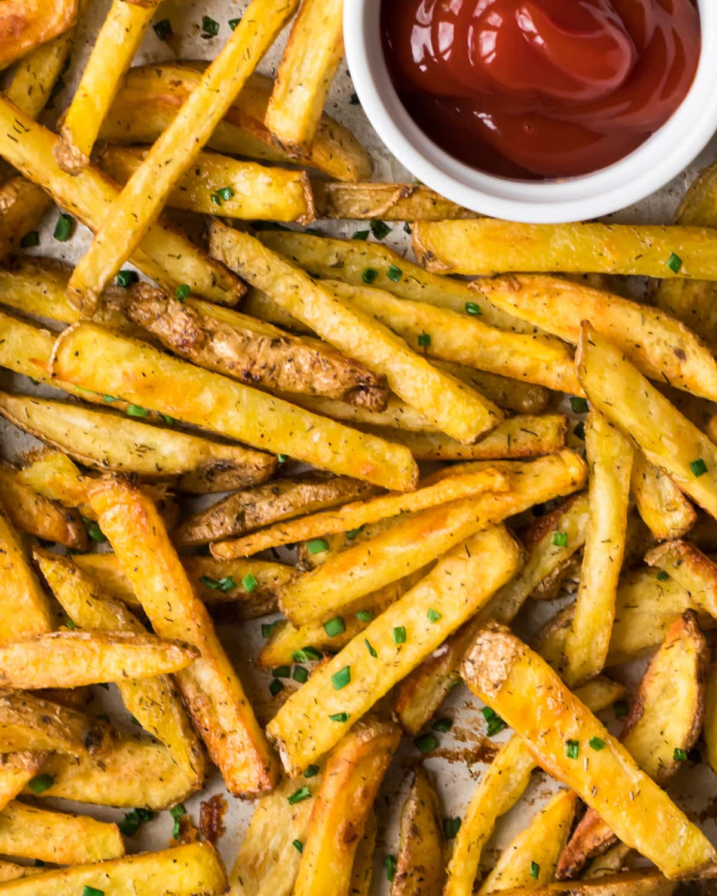

Fries

Description
Crispy on the outside and soft on the inside, fries are a classic snack made from sliced potatoes fried until golden and delicious. They are often served with ketchup, sauces, or as a tasty side dish with many meals.
Ingredients
- Potatoes - the main ingredient, preferably firm potatoes suitable for frying
- Cooking oil - for deep frying or frying until crispy
- Salt - for seasoning
- Black pepper
- Paprika or chili powder
- Garlic powder
- Herbs (such as parsley)
- Cheese or sauces for toppings
Steps
- Wash and peel the potatoes (optional), then cut them into evenly sized strips.
- Rinse the potato strips in cold water to remove excess starch.
- Pat the potatoes completely dry with a clean towel or paper towels.
- Heat cooking oil to about 175-190°C.
- Carefully add the potatoes to the hot oil in small batches.
- Fry for 5-8 minutes, or until the fries are golden brown and crispy.
- Remove the fries with a slotted spoon and drain them on paper towels or a wire rack.
- Sprinkle with salt while they are still hot.
- Serve immediately with your favorite dipping sauce or as a side dish.
Home